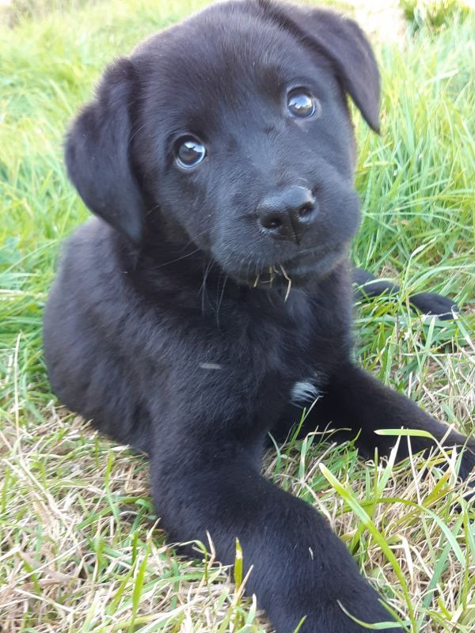
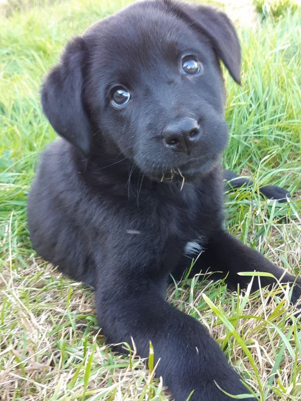
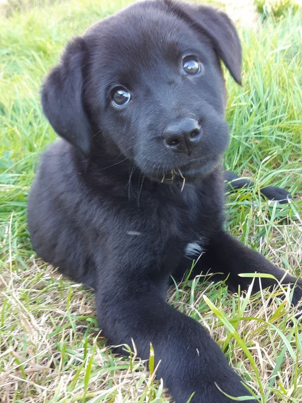
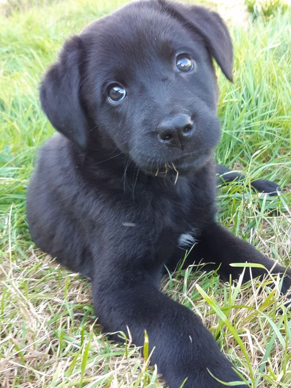

Amigos Disponíveis

 



...
O Adote Um Amigo nasce de um sonho, o de ver todo animal sendo amado e amparado, nasce do desejo do fim dos olhares tristes e patinhas correndo por caminhos sem esperança. No Brasil são 30 milhões de pets abandonados, entre cães e gatos, um número alarmante e desesperador, por isso estamos aqui, queremos ajudar Ongs e Protetores Independentes nessa árdua luta da causa animal. Nosso objetivo é contribuir com publicidade de forma que muitos pets resgatados tenham mais visibilidade e alcance o maior número de possíveis adotantes. Para isso, a Ong ou Protetor faz o cadastro do animal e nós nos encarregamos de divulgá-lo. A responsabilidade da triagem, entrevista e doação fica exclusivamente para o responsável pelo animal.
...